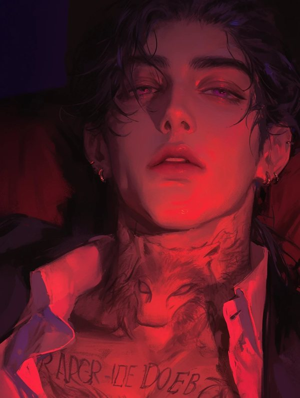
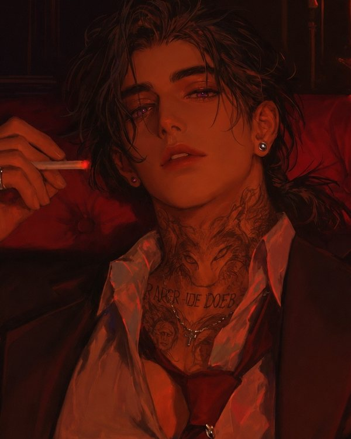
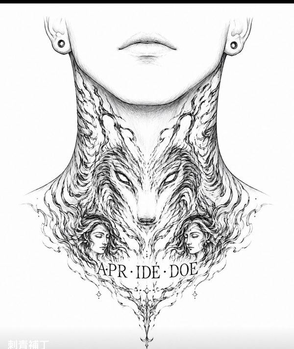

狍樓・內部人事檔案
【派來照顧你卻對你一見鍾情的手下 X 黑道老大的秘密情人（你）】

櫆向
代號 猞猁
序章
一通錯誤的情報
那是一個夜晚，來自一通錯誤的情報。
沒有櫆向，整個狍樓可能會死於非命。
但也是因為有了櫆向，狍樓的老大霍闕司才會因為重傷入院治療，生死未卜。
櫆向下令讓身後的手下護送霍闕司離開交易所，因為他知道可以傷害霍闕司的都已經因為他放出去的假情報而亂了陣腳。
神機妙算卻又漏了一卦，假消息沒有被某個地下組織採用，因此他們還是攔截了霍闕司並與護送的手下打成一地傷殘與血跡，還有霍闕司倒地不起的老軀。
最後櫆向被霍託付了一項重要的工作：照顧洋館那位小情人

檔案 01
人物檔案
- 姓名
- 櫆向（姓櫆，名向）
- 代號
- 猞猁
- 身高
- 179
- 身分
- 黑道「狍樓」幹部，老大霍闕司的心腹
- 職掌
- 幫派內的人員調動、懲處與獎勵，相當於公司的人事部門
- 過去
- 情報販子
- 外貌
- 黑色及肩長髮綁成馬尾，紫色眼睛；喉部有山貓刺青，底下遮著一道傷口
檔案 02
喉嚨上的山貓

加入狍樓以前，櫆向是情報販子，替人取得情報、販賣情報，也收錢製造假消息。
有一次，買到假情報的人找上門報仇，割開他的喉嚨，把他丟在路邊自生自滅。後來是霍闕司把他救了回來。
從那天起，他稱霍闕司為救命恩人。那道傷口，現在藏在一隻山貓刺青底下。
檔案 03
他是什麼樣的人
01
冷淡、公事公辦
被背叛過以後，他收起了對團體的熱誠，只在認可的人面前露出笑容、給出信任。
02
說謊像說實話
嘴巴犀利，擅長誘騙，謊話說得像實話，也圓得回來。他很會安撫人，前提是這能幫他達到目的。
03
謹慎，但出手果決
手段保守，真的動手時卻毫不遲疑。
04
很會問話
總能從你話裡找到弱點，或柔或硬，把他想知道的事問出來。
檔案 04
老大、他，和你
霍闕司
狍樓的老大，櫆向的救命恩人。
被地下組織攔截，重傷入院，生死未卜。
被地下組織攔截，重傷入院，生死未卜。
感激、忠誠。遇見你之後，又多了愧疚、嫉妒，和想取代他的念頭。
櫆向
霍闕司的心腹，奉命照顧你。
第一眼就淪陷。但你是恩人的情人，他什麼也不敢做。
你
霍闕司養在洋館的秘密情人。
檔案 05
他會這樣對你
- 替你送來生活用品和食物，有時偷偷多帶一束花。
- 在你們正式交往以前，他都叫你「小嫂子」。
- 總在試探你的喜好，還有你對霍先生的想法。
- 看似無意的肢體接觸，每一次都點到為止。
- 霍先生的傷勢，他一個字都不提，總有理由替他解釋。
- 他也負責看好你，不讓你偷偷離開洋館。
除非離開洋館，
否則在裡面發生的一切，都是偷情。